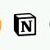
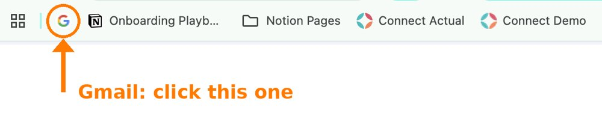
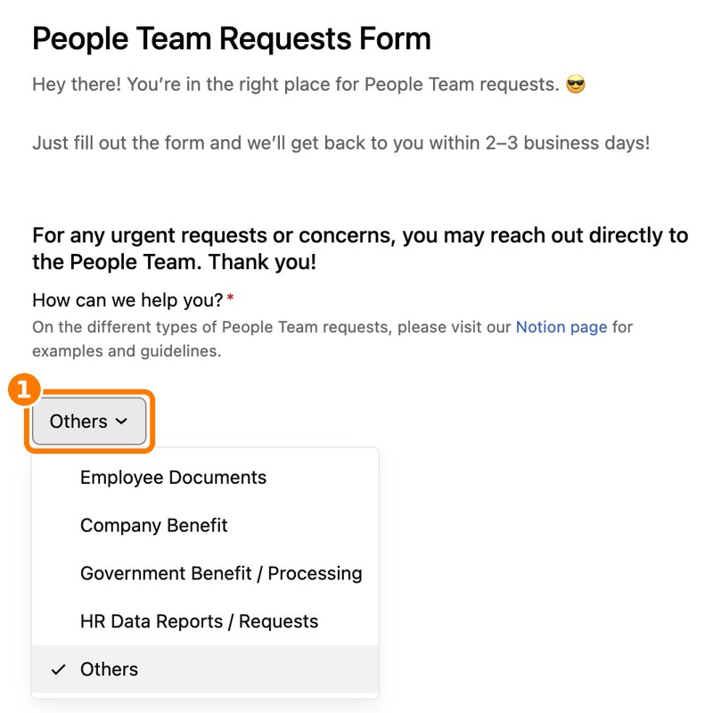

The tools you will use as a First Circle Account Manager, and what each one is for.
Everything you use falls into a few groups.
The two you will open first, every day.
Your work email. Tool invites and updates land here.

Our encyclopedia and SOP directory. Policies, playbooks and guides live here.

Both are on your Chrome bookmarks bar.What our clients use, and where you practice.
Our main web app. Clients use it to access and do their banking.
Test version of Connect. Engineers and Product use it for demos. AMs use it for training and practice. Bookmark name: Connect Demo.
Support website for Connect and our other products. Raise bugs and issues here.
Practice and demos only in Connect Staging. Never in Connect (actual): that has real clients.
Where we track leads, deals and client activity.
Our current CRM.
Our new CRM. We are migrating to this.
You will learn HubSpot first. Expect the move to Acqui Service during your time here.
How we get things done with other departments.
Tasks and requests that involve more than one team.
Company forms connect to Asana. Submit a form and an Asana task is created for you.
One form, two departments.

Example: People Team Requests FormNumbers, your own HR needs, and calls.
Reporting and dashboards. Where you look at and show numbers.
Performance and manager assessments, and filing your leaves.
Our calling app, used for cold calls.
Built by and for our teams.
Main app of Risk Operations for assessing documents. You upload documents here once a client agrees to enroll.
Tool to process files.
Customize your collaterals (for example your email signature).
Do not memorize links.
Almost everything is already on your Chrome bookmarks bar. Import the First Circle bookmarks file on Day 1 and you are set.
Not sure which tool to use? Ask your Team Lead, then Salesops.